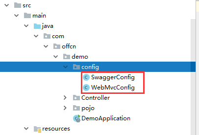

springboot是对spring的缺点进行改善和优化，约定大于配置 开箱即用，没有代码的生成，也无需xml文件配置，可以修改属性值来满足需求。
springboot是替代spring的，故而通常不会一起使用。
作用：可以将SpringBoot工程打成一个jar包，在其他工程中使用(相当于框架)其中的静态资源等。
对于springboot这个框架而言，它有自己的主启动类(DemoApplication.java)，而框架默认的自定义类所在位置是在主启动类的子类(子类:它的子侄一类,同级目录下一级)。
如图中标红的位置：

package com.offcn.demo.Controller;
@RestController//这个注解说的是@Controller+@ResponseBody
public class TestController {
@RequestMapping("/test/{id}")
public Car getCar(@PathVariable("id") Integer id, @RequestParam("name") String name){
Car c = new Car(id, name, 100000, new Date());
return c;
}
}这里需要介绍一个插件Lomlok，它就是springboot对于json格式的支持手段。
使用3步骤：
1、依赖
<dependency>
<groupId>org.projectlombok</groupId>
<artifactId>lombok</artifactId>
<version>1.18.6</version>
</dependency>2、安装插件Lomlok
在File->setting->Plugins中搜索lomLok安装
3、运用于pojo对象/实体类
相关注解：
@Data 是@Setter+@Getter+@ToString
@AllArgsConstructor 全参构造器
@NoArgsConstructor 无参构造器
4、如普通的pojo对象般使用
和spring一致，路径传参和携带数据(?)。
SpringBoot提供了三个静态资源文件夹：
1、static是在创建springBoot工程时自带的静态资源文件夹。
2、public可以自己创建也不需要设置它。
3、META-INF/resources与public相似
4、自定义静态资源类，两种方式。
4.1创建一个配置类，SpringBoot提供了自定义配置类。
@Configuration，并实现WebMvcConfigurer的则是配置类。
其中addResourceHandlers方法是增加一个资源路径。
regisry.addResourceHandler("/访问时的路径/**").addResourceLocation("classpath:内部的文件夹/file:磁盘路径");
registry.addResourceHandler("/webJars/**").addResourceLocations("classpath:META-INF/resources/webJars/");自定义了一个内部的文件夹为静态资源文件夹。
registry.addResourceHandler("/webJars/**").addResourceLocations("file:E:\\**\\");这是自定义了一个磁盘路径为内部资源文件夹。
将一个文件夹设置为资源文件夹。
4.2在配置文件中application.properties中配置
web.upload-path=D:/springboot/pic/
spring.mvc.static-path-pattern=/**
spring.resources.static-locations=classpath:/META-INF/resources/,classpath:/resources/,
classpath:/static/,classpath:/public/,file:${web.upload-path}作用：就是打包SpringBoot工程。
静态文件存放规则：META-INF/resources/webjars/${name}/${version}
前期准备需要将META-INF/resources/webjars/的目录设置为资源路径。install命令打包该工程，并放入本地仓库。
如何在其他的工程中使用：
1、导入依赖
<dependency>
<groupId>com.offcn</groupId>
<artifactId>Webjars-Demo</artifactId>
<version>1.0</version>
</dependency>2、在该工程需要使用时的路径是前期设置的访问路径。
修改配置文件application.properties后缀名为yml，可以在其中配置一些参数信息。通过@Value("${属性名}")注解即可。
application.yml配置文件中，在其中键值对之间有冒号和一个空格。
server:
port: 8888
servlet:
context-path: /java001
重启项目，此时的端口号就是8888,项目名称是/java001
#我们可以在application.yml文件中，配置一些常量或者其他参数配置。读取的时候通过Spring的@Value(“${属性名}”)注解即可。
#配置文件：
offcn_ip:
1.1.1.1
offcn_port:
9999
//Controller层
@Value("${offcn_ip}")
private String offcn_ip;
@Value("${offcn_port}")
private String offcn_port;
#还可以自定义的pojo对象：
userbody:
name: xxx
password: 123456
birthday: 1992.10.28
创建一个对应的实体类，并且在@ConfigurationProperties(prefix="userbody")
@RestController
@EnableConfigurationProperties({UserBody.class})
public class HelloControllerBean {
@Autowired
UserBody userbody;